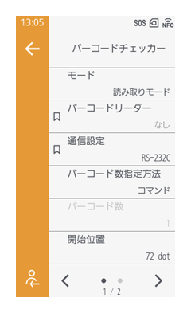
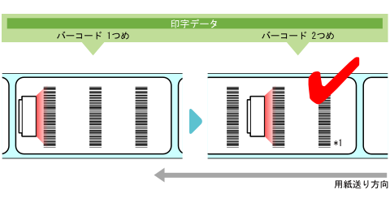
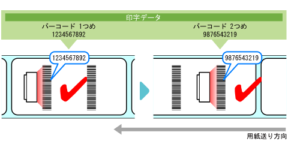

バーコードの読取りチェック設定
［印字］ > ［詳細設定］ > ［バーコードチェッカー］

本機能を有効にし、スキャナを接続すると、ラベルに印字したバーコードを確認できます。

- ティアオフモードでは使用できません。
- スキャナの取り付けには、バーコードチェッカーマウントキットを使用してください。取り付け方法は、バーコードチェッカーマウントキットに付属の取扱説明書をご覧ください。
［モード］
バーコードチェック機能のモードを選択するか、機能を無効にします。
［読み取りモード］を選択すると、印字したバーコードが読み取れるかをチェックします。スキャナが読み取ったバーコード数と印字データ中のバーコード数が一致するかで判断します。
スキャナが読み取ったバーコード数が印字データ中のバーコード数に達した場合は、読取り成功と判断します。次のラベルを印字します。

*1：スキャナが読み取ったバーコード数が印字データ中のバーコード数より多かったとしても、読取り成功となります。
［照合モード］を選択すると、印字したバーコードの読取り結果と印字データ中のバーコードデータが一致するかをチェックします。バーコードコマンドで作成したバーコードが対象です。
印字したバーコードの読取り結果と印字データ中のバーコードデータが一致した場合は、正常と判断します。次のラベルを印字します。

初期値：無効
［バーコードリーダー］
接続したスキャナが表示されます。
［通信設定］
スキャナとの通信に使用するインタフェースを選択します。
初期値：
RS-232C接続が有効の場合 ［RS-232C］
RS-232C接続が無効の場合 ［USB］
［読み取りテスト］
接続したスキャナの読取りテストをおこないます。スキャナを接続している場合にのみ使用できます。
［バーコード数指定方法］
［モード］で［読み取りモード］を選択している場合にのみ表示されます。
［コマンド］を選択すると、バーコードコマンドで作成したバーコードを読取りチェックの対象とします。
［設定］を選択すると、バーコードコマンド以外で作成したバーコード（グラフィックデータ、プレ印字されたバーコードなど）を読取りチェックの対象に含めます。
初期値：［コマンド］
［バーコード数］
［バーコード数指定方法］で［設定］を選択した場合に、1ラベル上のバーコード数を指定します。
- ［開始位置］を設定して先頭部分のバーコードをチェック対象から除外する場合、除外するバーコードを抜いたバーコード数を指定してください。
初期値：1
バーコードチェックの開始位置（スキャナの読取り開始位置）を調整します。
スキャナは、各ラベルが印字開始位置からこの設定で指定した長さを通過してから、読取りを開始します。
各ラベルに複数のバーコードが印字されている場合に、先頭部分のバーコードをチェック対象から除外したいときなどに利用できます。
CL4-SXR
- 203dpi：10～72～20000dot
- 305dpi：15～108～18000dot
- 609dpi：30～216～9600dot
CL6-SXR
- 203dpi：10～72～20000dot
- 305dpi：15～108～18000dot
［VOID印字］
バーコード読取りエラーまたは照合エラー発生時に、該当ラベルに×マークを印字するかを設定します。
6×6mmの×マークを、印字データのイメージ幅に、ラベルの終端から最大30mmの長さで印字します。長さは動作モードや印字データのイメージの長さによって変わります（ラベルの終端から最大30mmの位置）。
有効にすると、読取りエラーまたは照合エラー発生時に、本製品は停止せずに、該当のラベルに×マークを印字します。
VOID印字後は、［リトライ回数］で指定した回数に達するまで同じラベルを発行し、チェックします。指定のリトライ回数に達してもエラーが発生する場合は、VOID印字後に本製品が停止し、エラーメッセージが表示されます。
無効にすると、読取りエラーまたは照合エラー発生時に、本製品が停止し、エラーメッセージが表示されます。
- ［動作モード］が［ハクリ］または［ノンセパカッタ］の場合は、本機能を利用できません。
- 印字データの長さが8mm未満の場合は、本機能を利用できません。
- ［センサタイプ］が［透過］の場合、VOID印字の長さはVOID印字の長さ-4mmとなります。
- ［センサタイプ］が［反射］の場合、VOID印字の長さはVOID印字の長さ-1mmとなります。
- VOID印字の長さのバックフィード量は30.0mmです。ただし、チェック対象のラベルに印字されているイメージの長さが30.0mm未満であれば、バックフィード量はそのイメージの長さとなります。
- 本機能が有効の場合、カッタ動作でカットしない状態でも照合エラーが発生すると強制的にVOID印字します。
初期値：無効
［リトライ回数］
VOID印字したあと、同じバーコードを再発行してチェックする回数を設定します。（0～10回）
［VOID印字］が有効の場合にのみ表示されます。
エラーが発生し続けている限り、この設定で指定した回数まで再印字がおこなわれます。
例えば、0回に設定した場合は、1枚目のチェックでエラーが発生するとVOID印字後に本製品が停止し、エラーメッセージが表示されます。5回に設定した場合は、6枚目のチェックまですべてエラーが発生し続けると、6枚目のVOID印字後に本製品が停止し、エラーメッセージが表示されます。
初期値：0
［ホスト通知］
バーコードチェック結果を印字データ送信元のホストに返送するかを設定します。
有効にすると、各ラベルのバーコードチェック結果を以下の内容でホストに返送します。
- チェック成功の場合：<STX>BV,OK<ETX>
- チェック失敗の場合：<STX>BV,NG<ETX>
初期値：無効
［ログ］
本製品内に保存されたバーコードチェックのログデータを管理します。
本製品内にバーコードチェックのログデータがある場合にのみ有効になります。
ログファイルが最大サイズ（1MB）に達すると、古いログデータから新しいログデータに上書きされます。
- ［コピー］
バーコードチェックのログデータをUSBメモリにコピーします。
USBメモリを取り付けている場合にのみ有効になります。 - ［削除］
バーコードチェックのログデータを削除します。
バーコードチェックのログデータは以下のフォーマットで作成されます。
| フォーマットID | 説明 |
|---|---|
| YYYY | 読取り年 |
| MM | 読取り月 |
| DD | 読取り日 |
| hh | 読取り時 |
| mm | 読取り分 |
| ss | 読取り秒 |
| ZZZ | タイムゾーン |
| TTTTTTT | 本製品起動時からのラベル総発行枚数
|
| IR | チェック開始位置に達してから受信した読取りデータ数
|
| SRSR | 読取りデータサイズ（バイト） |
| drdr... | 読取りデータ |
| RRRRRRR | チェック結果
|
| IC | チェック対象となった印字データ数
|
| SCSC | 印字データサイズ（バイト）
|
| dcdc... | 印字データ
|